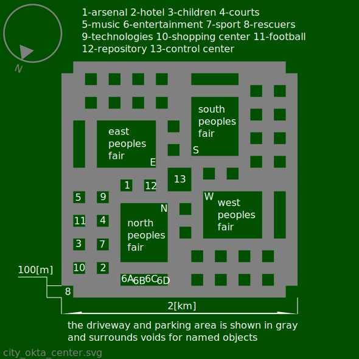

Okta - a city that looks like a regular octagon.
1 - industrial warehouses, car service.
2 - production and disposal.
3 - living squares.
The one-way octagonal road that surrounds the city shown in the diagram above is 17 [m] wide. From every pinnacle octagon, a one-way road is directed to the center, 4 [m] = 2 * 2 [m] in width. The arrows indicate what is allowed. direction of movement of cars. After entering the octagonal road, the car must pass at least one side of the octagon, before exiting the octagonal road.
The city contains 3200 = 40 * 20 * 4 living squares. Residential house designed for 5 residents. The city accommodates 16000 = 3200 * 5 inhabitants. City area 25.456[km2]=2*20.5*9[km2]. Population density of the city 628[inhabitants/km2]=16000/25.456 inhabitants per square kilometer.
The permitted speed of movement within the city is from 0 to 6 [m / s]. For the movement of cars on the internal roads of the city, all parallel internal roads of one direction are simultaneously opened, then all parallel internal roads of the other direction are opened, for movement in turn, with an interval of 180 [s]. Circumferential one-way roads are always open to traffic.
City center.

1 - arsenal. (weapon + practice/research) Storing and modifying tools created for malicious changes. Collecting and providing information useful to the observer about group physical harmful changes.
2 - hotel. Temporary modest residence. Heating, sewerage, electricity, acceptable soundproofing.
3 - children. Temporary place of possible safe group placement and learning of children, in comfortable conditions.
4 - courts. Open areas for practicing various types of sports games.
5 - music. Storage, demonstration and modification of instruments created to modify sounds.
6 - entertainment. 6A - aquariums, museums, exhibitions. 6B - theaters, concerts. 6C - cinemas. 6D - dancing, billiards, gambling, brothels. Safe rooms of buy and using, only in the form of inhaled smoke, inhaled vapor, drinkable liquid, inhaled powder, chemically active substances, under the supervision of a siter.
7 - спорт. Sports complex. Comfortable serviced areas generally for summer sports.
8 - rescuers. Medicine. Fighting fires. Rescue work. Repair and maintenance of the city.
9 - технологии. Сбор, хранение и демонстрация инструментов для создания и изменения. Сбор и предоставление,полезной для наблюдателя информации, о способах создания и изменения.
10 - shopping center. Sale of things, services, food.
11 - football. Outdoor football etc stadium.
12 - repository. Storage and maintenance of the city's valuable resources.
13 - center of regulation. Regulation and planning of changes in the city. Chronicle. Crematorium. Electric chair.
(N, W, S, E) Fair. Handmade to order. Free sale of things, services, food, traditional for the culture of the peoples represented.
Reasonable animals are allowed in the city square.
Birds are allowed in the city square, except for scavengers and ravens .
On the city square are prohibited: Scavengers, poisonous animals, animals infected with dangerous infections, animals weighing more than 10 kg, aggressive animals ( lynx, manul, crocodile, anaconda, etc ) canids, ravens, ungulates, rodents.
Animals are allowed in the fairground and living quarters, provided they are kept safe.
The living squares, in the area of which there are animals, is fenced with a fence with a height of 3 [m] to 7 [m] inclusive. The fence around the living square is transparent starting from a height of 3 [m] and higher. The transparent part of the fence is colorless. The height of the fence must be sufficient to keep the animals in the area of the square of residence. Animals are transported in special sufficiently strong insulated wheeled carts. Animals weighing more than 10 [kg] are transported in special sufficiently strong insulated vehicles. It is forbidden to transport animals in conditions where there is a possibility of contact of a stranger passing through, even if the passing person provokes contact with the transported animal.
Let's be honest, no one needs your dog's shit on their boot, or watch your dog shit if he doesn't ask for it. Not pets, rats, pigeons, flies and others, do their job well. There is no need to help them, damage the infrastructure and create emergency situations in which others may suffer. If you want a meat toy, keep it inside your house, or do it outside the city, in the countryside, where cows, sheep, more freedom for adventure lovers.
living squares.
Sports complex.

Вид спереди.
0up - поверхность пола нулевого этажа. Высота 0[m].
1up - поверхность пола первого этажа. Высота 4.5[m].
2up - поверхность пола второго этажа. Высота 9[m].
3up - поверхность пола третьего этажа. Высота 13.5[m].
4up - поверхность пола четвертого этажа. Высота 18[m].
5up - поверхность пола пятого этажа. Высота 22.5[m].
6up - поверхность пола шестого этажа. Высота 27[m].
7up - поверхность пола седьмого этажа. Высота 31.5[m].
Крыша повторяет элипс с полуосями 50[m] и 34[m].
Схемы этажей. В площади помещения горизонтальная длина указана первой. Во время обсчета площади проходов, при совпадении горизонтального и вертикального направлений, площадь совпадения переходит к горизонтальному направлению. Обсчет площади проходов проводится снизу в верх.
Этаж 0up.

1-лифт. Площадь 35.75[m2]=6.5[m]*5.5[m]. Основной лифт площадью 7[m2]=3.5[m]*2[m] предназначен для общего пользования. Дополнительный лифт предназначен для сложных ситуаций. Дополнительный лифт площадью 7[m2]=3.5[m]*2[m] используется медецинскими работниками в рабочих целях.
Между лифтами проходит лестница общего пользования. Ширина лестницы 1.5[m]. Длина ступени лестницы 1/3 [m]. Высота ступени лестницы 1/4[m].
2-волейбол. Площадь 600[m2]=30[m]*20[m] вмещает стандартное игровое поле с запасом площади вокруг игрового поля.
3-вахта. Площадь 19.25[m2]=3.5[m]*5.5[m]. Распределение раздевалок между посетителями. Голосовое оповещение посетителей и персонала, через громкую связь.
4-персонал(ж). Площадь 62.5[m2]=5[m]*12.5[m]. Помещение отдыха для подсобных работников женского пола.
5-персонал(м). Площадь 62.5[m2]=5[m]*12.5[m]. Помещение отдыха для подсобных работников мужского пола.
6-пропуск. Площадь 12.5[m2]=5[m]*2.5[m]. Запись на посещение. Выдача пропусков. Справочная информация.
7-баскетбол. Площадь 700[m2]=35[m]*20[m] вмещает стандартное игровое поле с запасом площади вокруг игрового поля.
8-пища. Площадь 400[m2]=20[m]*20[m]. Площадь для общественого питания посетителей. Полностью отделена - вход с улицы. Застраивается в несколько этажей высотой от 2.5 метров от пола до потолка на этаж, по отдельному проекту. Использует общее для комплекса или отдельное водоснабжение, вентиляцию, электричество.
9-электричество. Площадь 75[m2]=5[m]*15[m]. Служебное помещение с ограниченым доступом работников. Размещение систем достаточных для полноценого электроснабжения комплекса.
10-климат. Площадь 225[m2]=15[m]*15[m]. Служебное помещение с ограниченым доступом работников. Размещение систем достаточных для полноценого воздухообмена, подержания уровня влажности воздуха и температуры воздуха комплекса.
11-вода. Площадь 300[m2]=20[m]*15[m]. Служебное помещение с ограниченым доступом работников. Размещение систем достаточных для полноценого водоснабжения комплекса.
12-раздевалки. Каждая раздевалка вмещает 13 посетителей. Раздевалка оборудована удобствами и содержит 1 большой шкаф 1[m]*1[m], 13 шкафов 0.5[m]*1[m], 13 сидений 0.5[m]*0.5[m], 1 умывальник, 1 толчок, 4 душа.
13-басейн. Площадь 3600[m2]=60[m]*60[m]. Плавательная площадь разделена на две части. Первая часть - плавательная площадь постояной глубины. Площадь первой части 1250[m2]=25[m]*50[m]. Вторая часть - нырятельная площадь и плавательная площадь ступенчатой изменяющейся глубины. Площадь второй части 750[m2]=15[m]*50[m].
14-хокей. Площадь 1650[m2]=30[m]*55[m] вмещает стандартное игровое поле.
Площадь раздевалок 0up 825[m2]=22*2.5[m]*15[m].
Площадь проходов 0up 1457.5[m2]=5[m]*2.5[m] + 5[m]*20[m] + 10[m]*2[m] + 60[m]*5[m] + 5[m]*15[m] + 5[m]*40[m] + 5[m]*55[m] + 5[m]*55[m] + 5[m]*40[m].
Этаж 1up.
0up-продолжение наземного этажа.
15-подсобка. Площадь 30[m2]=2[m]*15[m].
16-гимнастика для беременых. Площадь 175[m2]=15[m]*7.5[m] + 5[m]*12.5[m].
17-медицина. Площадь 89.25[m2]=10[m]*7[m]+3.5[m]*5.5[m].
18-хокей. Площадь 1650[m2]=30[m]*55[m] вмещает стандартное игровое поле.
К-крыша (площадь возрастающей высоты).
Площадь раздевалок 1up 787.5[m2]=21*2.5[m]*15[m].
Площадь проходов 1up 1262.5[m2]=59.5[m]*5[m] + 5[m]*15[m] + 39.5[m]*5[m] + 4.5[m]*55[m] + 4.5[m]*55[m] + 39.5[m]*5[m].
Этаж 2up.

19-подсобка. Площадь 45[m2]=3[m]15*[m].
20-подсобка. Площадь 50[m2]=2.5[m]*20[m].
21-растяжка(ж). Площадь 105[m2]=10.5[m]*10[m].
22-йога(ж). Площадь 105[m2]=10.5[m]*10[m].
23-фитнес(ж). Площадь 100[m2]=10[m]*10[m].
24-аэробика(ж). Площадь 100[m2]=10[m]*10[m].
25-настольный тенис. Площадь 258[m2]=12.5[m]*2.5[m] + 15[m]*12[m] + 8.5[m]*5.5[m].
26-баскетбол. Площадь 700[m2]=35[m]*20[m] вмещает стандартное игровое поле с запасом площади вокруг игрового поля.
27-пружиный зал. Площадь 300[m2]=20[m]*15[m]. Тренажеры основаные на растягивании пружин. Травматичность у пружиных тренажеров меньше, чем травматичность у тренажеров с постояным сопротивлением от силы веса.
28-собственый вес. Площадь 262.5[m2]=17.5[m]*15[m]. Опоры для тренировки тела собственым весом посетителя.
29-подсобка. Площадь 37.5[m2]=2.5[m]*15[m].
30-бадминтон. Площадь 450[m2]=4*7.5[m]*15[m] вмещает четыре стандартных игровых поля с запасом площади вокруг игрового поля.
31-минифутбол. Площадь 1100[m2]=25[m]*44[m] вмещает стандартное большое игровое поле с запасом площади вокруг игрового поля.
32-подсобка. Площадь 162.5[m2]=2.5[m]*65[m].
Площадь раздевалок 2up 750[m2]=20*2.5[m]*15[m].
Площадь проходов 2up 1060[m2]=45.5[m]*5[m] + 5[m]*15[m] + 35.5[m]*2[m] + 3[m]*15[m] + 2.5[m]*15[m] + 35.5[m]*2[m] + 5.5[m]*44[m] + 5[m]*44[m] + 35.5[m]*2[m].
Этаж 3up.

30-подсобка. Площадь 45[m2]=3[m]*15[m].
31-подсобка. Площадь 70[m2]=3.5[m]*20[m].
32-груши. Площадь 70[m2]=7[m]*10[m]. Помещение с грушами для отработки ударов.
33-манекены. Площадь 70[m2]=7[m]*10[m]. Помещение с манекенами для отработки техник нанесения вреда противнику.
34-ринг. Площадь 100[m2]=10[m]*10[m] вмещает стандартный боксерский ринг 6[m]*6[m], с запасом площади вокруг ринга.
35-ринг. Площадь 100[m2]=10[m]*10[m] вмещает стандартный боксерский ринг 6[m]*6[m], с запасом площади вокруг ринга.
36-медицина. Площадь 195.25[m2]=3*5[m]*6[m] + 15[m]*8.5[m] + 8.5[m]*5.5[m]. Помещение медицинского назначения. Дополнительные умывальники. Комната отдыха медицинского персонала. Четыре кровати. Две операционые палаты, для обработки кровоточащих ран и первой помощи при сложных травмах.
37-единоборства. Площадь 300[m2]=20[m]*15[m].
38-единоборства. Площадь 180[m2]=12[m]*15[m].
39-подсобка. Площадь 52.5[m2]=3.5[m]*15[m].
Площадь раздевалок 3up 712.5[m2]=19*2.5[m]*15[m].
Площадь проходов 3up 352.5[m2]=55.5[m]*5[m] + 5[m]*15[m].
Этаж 4up.

40-подсобка. Площадь 325[m2]=5[m]*65[m].
41-большой тенис. Площадь 1216[m2]=2*19[m]*32[m] вмещает 2 стандартных игровых поля с запасом площади вокруг игрового поля.
42-урбан. Площадь 3120[m2]=52[m]*60[m]. Изменяемые постройки для городских видов спорта. BMX, ролердром, скейтборд, паркур, скалодром.
43-подсобка. Площадь 67.5[m2]=4.5[m]*15[m].
44-подсобка. Площадь 25[m2]=5[m]*5[m].
45-подсобка. Площадь 25[m2]=5[m]*5[m].
46-подсобка. Площадь 25[m2]=5[m]*5[m].
47-подсобка. Площадь 25[m2]=5[m]*5[m].
48-шест. Площадь 60[m2]=12[m]*5[m]. Комфортное и неопасное помещение оборудованое професиональными шестами для стриптиза.
49-шест. Площадь 60[m2]=12[m]*5[m].
50-шест. Площадь 60[m2]=12[m]*5[m].
51-шест. Площадь 60[m2]=12[m]*5[m].
52-медицина. Площадь 195.25[m2]=3*5[m]*6[m] + 15[m]*8.5[m] + 8.5[m]*5.5[m].
53-волейбол. Площадь 700[m2]=35[m]*20[m] вмещает стандартное игровое поле с запасом площади вокруг игрового поля.
54-единоборства. Площадь 300[m2]=20[m]*15[m].
55-манекены. Площадь 105[m2]=7[m]*15[m].
56-подсобка. Площадь 75[m2]=5[m]*15[m].
Площадь раздевалок 4up 637.5[m2]=17*2.5[m]*15[m].
Площадь проходов 4up 974[m2]=5[m]*20[m] + 52[m]*5[m] + 5[m]*15[m] + 2*4[m]*32[m] + 27[m]*1[m] + 2*4[m]*32[m].
Этаж 5up.
57-подсобка. Площадь 280[m2]=7[m]*40[m].
58-шест. Площадь 50[m2]=10[m]*5[m].
59-шест. Площадь 50[m2]=10[m]*5[m].
60-шест. Площадь 50[m2]=10[m]*5[m].
61-шест. Площадь 50[m2]=10[m]*5[m].
62-медицина. Площадь 195.25[m2]=3*5[m]*6[m] + 15[m]*8.5[m] + 8.5[m]*5.5[m].
63-танцы. Площадь 300[m2]=20[m]*15[m].
64-подсобка. Площадь 105[m2]=7[m]*15[m].
Площадь раздевалок 5up 525[m2]=14*2.5[m]*15[m].
Площадь проходов 5up 275[m2]=40[m]*5[m] + 5[m]*15[m].
Этаж 6up.
65-подсобка. Площадь 400[m2]=10[m]*40[m].
66-медицина. Площадь 195.25[m2]=3*5[m]*6[m] + 15[m]*8.5[m] + 8.5[m]*5.5[m].
67-настольный тенис. Площадь 490[m2]=24.5[m]*20[m].
68-подсобка. Площадь 210[m2]=10.5[m]*20[m].
69-пружиный зал. Площадь 142.5[m2]=9.5[m]*15[m].
70-подсобка. Площадь 157.5[m2]=10.5[m]*15[m].
71-тир. Площадь 617.5[m2]=9.5[m]*65[m].
72-подсобка. Площадь 682.5[m2]=10.5[m]*65[m].
Площадь раздевалок 6up 375[m2]=10*2.5[m]*15[m].
Площадь проходов 6up 225[m2]=30[m]*5[m] + 5[m]*15[m].
Площадь помещений спортивного комплекса 34992.75[m2].
Площадь основных помещений спортивного комплекса 20090.75[m2].
Площадь раздевалок спортивного комплекса 4612.5[m2].
Площадь вспомогательных помещений спортивного комплекса 10289.5[m2]=34992.75[m2]-20090.75[m2]-4612.5[m2].
Residential house. Спроектирован из расчета на пять человек - двоих взрослых и троих подростающих. Сторона квадратного фундамента 22[m]. Высота потолка 3[m]. Высота этажа 4[m].
 скачать 3D модель
скачать 3D модель